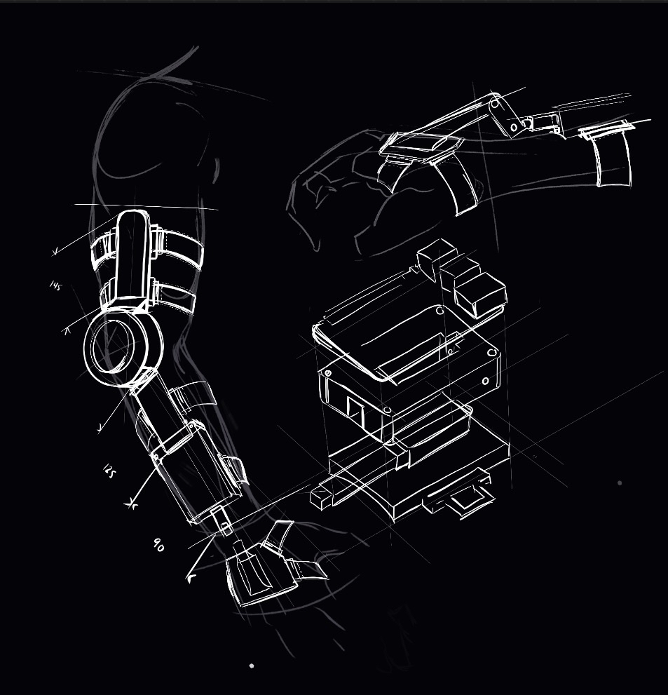
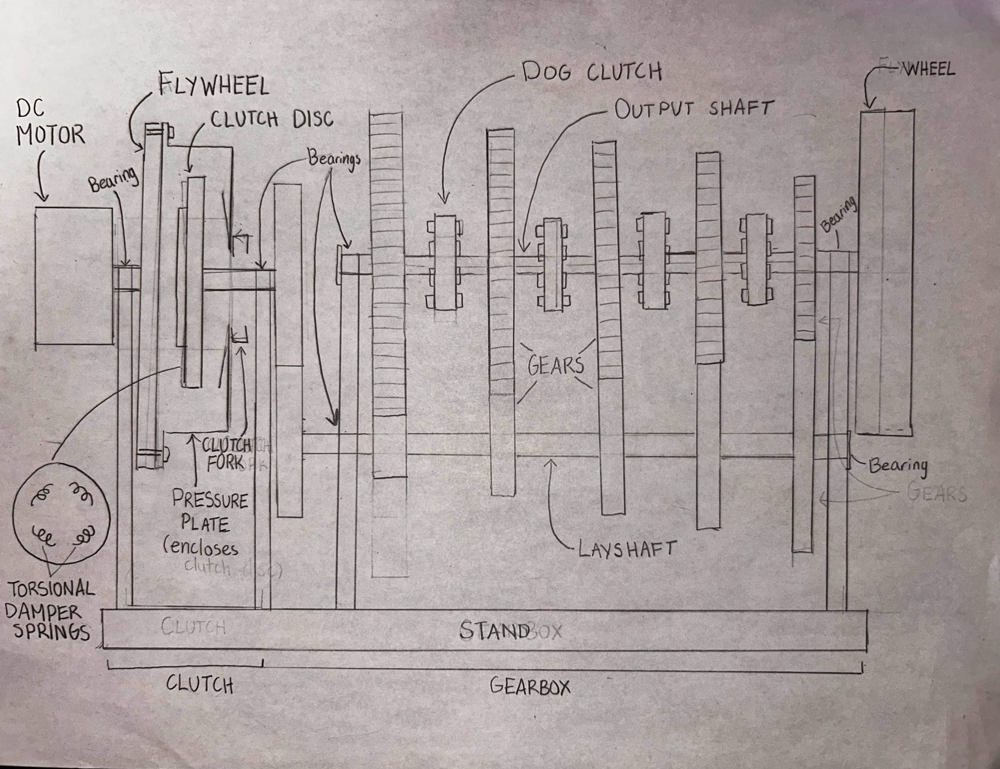
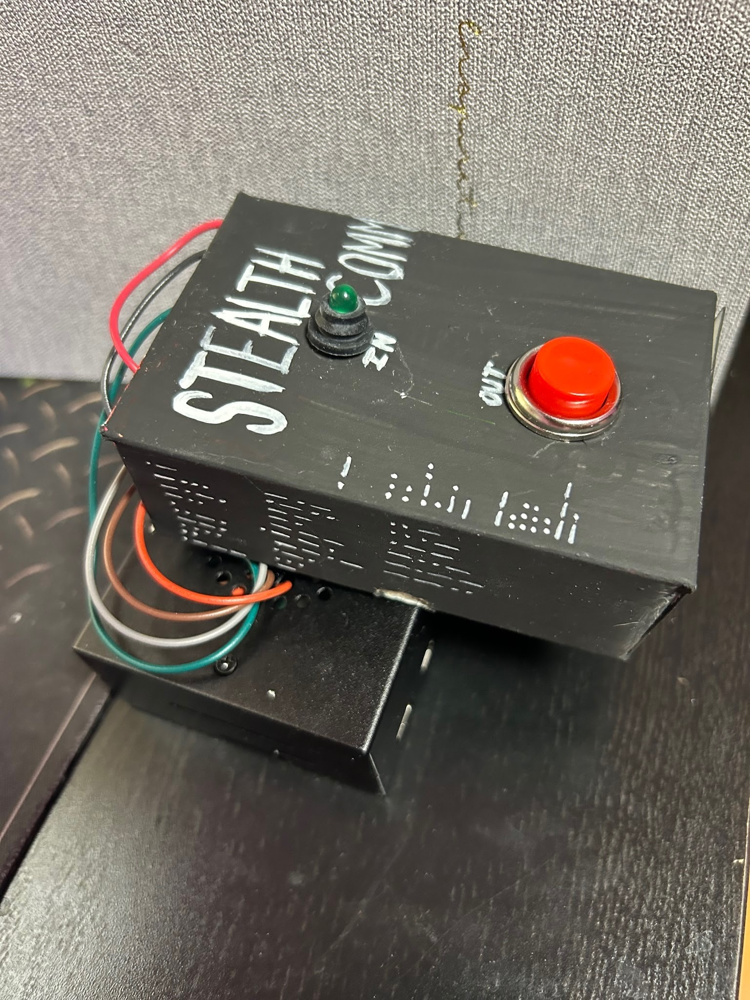
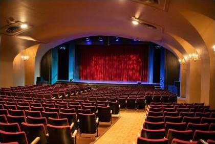
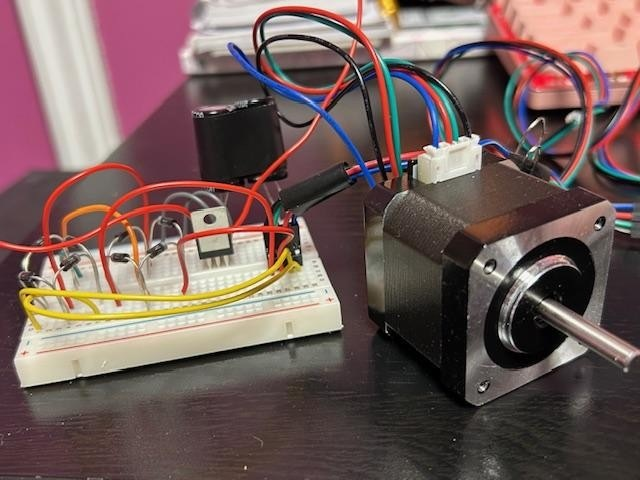
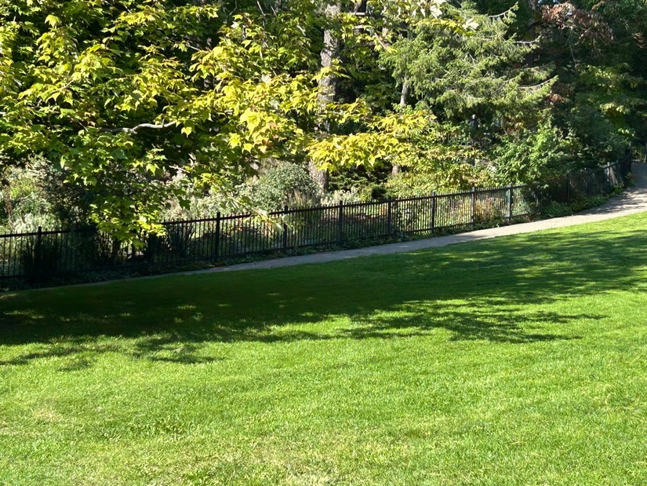
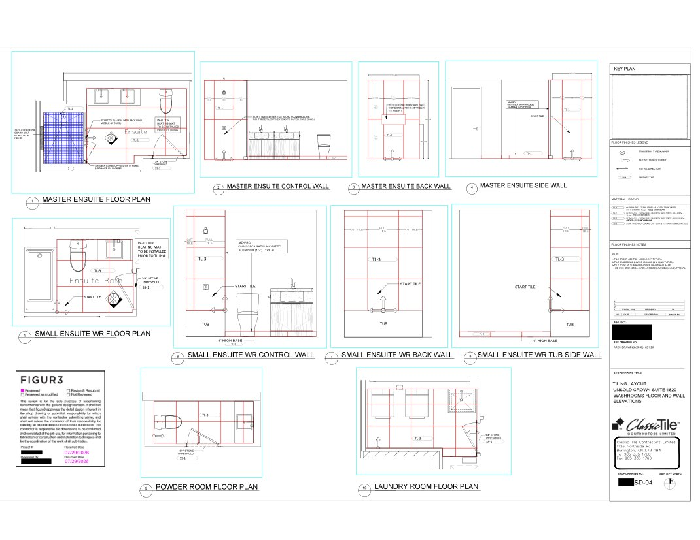

LINA HABIB / MECHANICAL ENGINEERING
Mechanical design.
Practical ideas.
I’m Lina Habib, a mechanical engineering student at the University of Toronto. My projects focus on mechanisms, robotics and hands-on prototyping.
SELECTED WORK / 2024—2026
Projects
Design and build work across robotics, mechanisms, electronics and acoustics.

NeuronMove
Collaborative UofT design-team work on a compact tremor-assistance wearable.

Gearbox Learning Platform
A collaborative UofT SolidWorks project illustrating three manual-transmission gear ratios.

StealthComm
A handheld Raspberry Pi device for Morse code communication.

AuricleSync
Audio system concepts informed by site visits and acoustic tests.

Hand-Crank Generator
A hand-powered 5V charger in a 3D-printed enclosure.

High Park Accessibility Project
A concept proposal for a more accessible route through High Park while protecting the Black Oak Savannah.

Classic Tile — Shop Drawings
Selected tile layouts and construction details prepared during a junior project coordination internship.
PROJECT HISTORY
Project timeline
Choose a project to view its design notes and media.
LET'S CONNECT
Have a project in mind?
I'm open to connecting about mechanical design, robotics, prototyping, and engineering opportunities.